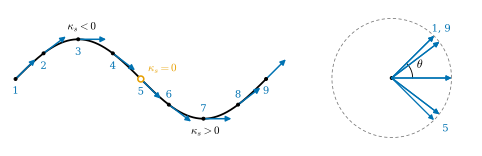
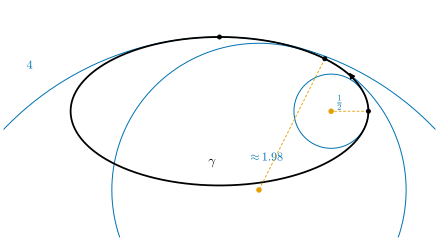
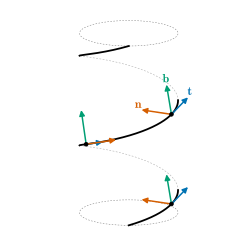

0.2 Curves: Speed, Arc Length, and Curvature
Goals
- parametrized curve의 속도벡터와 속력을 계산하고, arc length parametrization이 왜 필요한지 설명할 수 있다.
- curvature를 “단위 길이당 접선 방향이 도는 각”으로 이해하고, plane curve의 signed curvature와 osculating circle을 그림으로 읽을 수 있다.
- 일반 매개변수의 curvature 공식으로 원, helix, ellipse의 curvature를 구할 수 있다.
- contour의 curvature가 corner 검출, curvature scale space, snake에서 어떻게 쓰이는지 설명할 수 있다.
Prerequisites
- Section 0.1: linear approximation과 곡선의 2차 근사 (0.1.1)
- 미적분: 도함수, chain rule, 정적분. 벡터의 inner product, \(\R^3\)의 cross product, \(2 \times 2\) 행렬의 determinant
Motivation
Section 0.1에서 곡선이 접선에서 벗어나는 거리는 처음에 \(\kappa h^2/2\)라고 했다((0.1.1)). 이 절은 그 \(\kappa\)를 정확히 정의한다.
컴퓨터비전에서 이 질문은 이렇게 나타난다. segmentation mask의 경계(contour)에서 corner를 찾고 싶다. 경계는 어디서 날카롭게 휘는가? 그 답은 다음 세 가지에 따라 바뀌면 안 된다.
- contour를 몇 개의 점으로, 어떤 간격으로 sampling했는가(parametrization)
- 경계를 시계 방향으로 돌았는가, 반시계 방향으로 돌았는가(orientation)
- 물체가 영상 안의 어디에, 어느 방향으로 놓였는가(rigid motion)
첫째 요구에 답하는 것이 arc length parametrization이고, 둘째는 curvature에 부호를 붙이는 방식(signed curvature), 셋째는 curvature가 rotation과 translation에 변하지 않는다는 성질이다.
Parametrized Curves and Velocity
Definition 0.2.1 (parametrized curve and regular curve). 열린구간 \(I\)에서 \(\R^3\)(또는 \(\R^2\))으로 가는 smooth map \(\gamma\colon I \to \R^3\)을 parametrized curve(매개곡선)라 한다. \(\gamma'(t)\)를 \(t\)에서의 속도벡터, \(\abs{\gamma'(t)}\)를 속력이라 한다. 모든 \(t\)에서 \(\gamma'(t) \neq 0\)이면 \(\gamma\)를 regular curve(정칙곡선)라 한다.
곡선은 점들의 모임(그림)만이 아니라 그 위를 지나가는 방식까지 포함한 것이다. regular라는 조건은 “멈추지 않고 지나간다”는 뜻이다. 멈추는 점이 있으면 smooth map이어도 그림이 뾰족할 수 있다. 예를 들어 \(\gamma(t) = (t^2, t^3)\)은 \(t = 0\)에서 \(\gamma'(0) = 0\)이고 그 점에서 trace가 뾰족하다(Non-example 4.1.9).
Example 0.2.2 (circle and helix). 반지름 \(r\)인 원 \(\gamma(t) = (r\cos t,\ r\sin t,\ 0)\)의 속도벡터는 \(\gamma'(t) = (-r\sin t,\ r\cos t,\ 0)\)이고 속력은 \(r\)이다. helix \(\gamma(t) = (a\cos t,\ a\sin t,\ bt)\) (\(a \gt 0\), \(b \neq 0\))는 반지름 \(a\)인 cylinder를 감아 오르며 한 바퀴에 \(2\pi b\)만큼 올라간다. \(\gamma'(t) = (-a\sin t,\ a\cos t,\ b)\)이므로 속력은 \(\sqrt{a^2 + b^2}\)으로 일정하고, 한 바퀴의 길이는 \(2\pi\sqrt{a^2 + b^2}\)이다. 두 곡선 모두 regular다.
Verification: verify/v-0-2-curves.py
Arc Length
같은 원을 \(\gamma(t) = (r\cos 2t,\ r\sin 2t,\ 0)\)으로 두 배 빠르게 돌아도 그림은 같다. 그런데 속도벡터는 두 배가 되고, 그 변화율도 달라진다. 곡선의 모양을 잴 때는 “시간”이 아니라 “지나온 길이”를 기준으로 삼아야 한다.
Definition 0.2.3 (arc length parametrization). regular curve \(\gamma\)와 \(t_0 \in I\)에 대해
를 \(t_0\)부터 잰 arc length(호의 길이)라 한다. \(s'(t) = \abs{\gamma'(t)} \gt 0\)이므로 \(s\)는 strictly increasing이고 역함수 \(t = t(s)\)가 있다. 곡선을 \(s\)로 다시 쓴 \(\gamma(t(s))\)를 arc length parametrization(호의 길이 매개화)이라 한다. 이 곡선은 속력이 항상 \(1\)이다(unit-speed).
예를 들어 helix는 \(s = \sqrt{a^2 + b^2}\,t\)이므로 \(\gamma\big(s/\sqrt{a^2 + b^2}\big)\)가 arc length parametrization이다. 이후로 arc length 매개변수는 \(s\)로 쓰고, \(s\)에 대한 미분도 \('\)으로 쓴다. 실제 계산에서 arc length parametrization을 식으로 구하기 어려운 경우가 많지만(ellipse가 그렇다), 존재한다는 사실만으로 정의에 쓸 수 있다. 계산은 아래의 일반 매개변수 공식 (0.2.3)으로 한다.
Curvature: How Fast the Direction Turns
unit-speed curve에서 \(\mathbf{t}(s) = \gamma'(s)\)는 길이가 \(1\)인 접선 방향, 곧 unit tangent vector다. 곡선이 휘면 이 방향이 돈다. curvature는 단위 길이를 가는 동안 방향이 얼마나 빨리 도는지를 잰다(Figure 0.2.1). \(\inner{\mathbf{t}}{\mathbf{t}} = 1\)을 미분하면 \(2\inner{\mathbf{t}'}{\mathbf{t}} = 0\)이므로 \(\mathbf{t}'\)은 언제나 \(\mathbf{t}\)에 수직이다. 길이는 변하지 않고 방향만 변하기 때문이다.

Definition 0.2.4 (curvature and signed curvature). \(\gamma\)가 arc length로 parametrization된 곡선이고 \(\mathbf{t}(s) = \gamma'(s)\)일 때
를 \(s\)에서 \(\gamma\)의 curvature(곡률)라 한다. plane curve에서는 \(\mathbf{t}\)를 반시계 방향으로 \(90^\circ\) 돌린 단위벡터 \(\mathbf{n}_s\)를 쓴다. \(\mathbf{t}' \perp \mathbf{t}\)이므로 \(\mathbf{t}'(s) = \kappa_s(s)\,\mathbf{n}_s(s)\)인 수 \(\kappa_s(s)\)가 하나 있고, 이것을 signed curvature(부호곡률)라 한다. \(\abs{\kappa_s} = \kappa\)이다.
\(\kappa_s \gt 0\)이면 진행 방향의 왼쪽으로(반시계 방향으로) 돌고, \(\kappa_s \lt 0\)이면 오른쪽으로 돈다. 부호가 바뀌는 점을 inflection point(변곡점)라 한다. \(\mathbf{t}\)가 \(x\)축과 이루는 각을 \(\theta(s)\)라 하면 \(\kappa_s = d\theta/ds\)이다(Theorem 4.4.9). 곧 curvature는 “단위 길이당 접선이 도는 각(라디안)”이다. 반지름 \(r\)인 원을 길이 \(\ell\)만큼 가면 접선은 \(\ell/r\) 라디안 돌므로 원의 curvature는 \(1/r\)이다.
거꾸로 curvature가 \(\kappa_s \neq 0\)인 점에서는 반지름 \(1/\abs{\kappa_s}\)이고 중심이 \(\gamma + \mathbf{n}_s/\kappa_s\)인 원이 그 점에서 곡선과 가장 잘 맞는다. 이 원을 osculating circle(접촉원)이라 하고, 곡선과 2차 항까지 일치한다(Theorem 4.5.5). 많이 휜 곳은 작은 원, 거의 곧은 곳은 큰 원에 맞는다(Figure 0.2.2).

데이터는 대개 arc length로 주어지지 않는다. 일반 매개변수 \(t\)에서는 chain rule로 정리한 다음 공식을 쓴다(Proposition 5.1.2, Proposition 4.4.5).
둘째 식에서 \(\gamma = (x, y)\)이다. \(\abs{\gamma'}^3\)으로 나누는 것이 속력의 영향을 지운다. 함수의 그래프 \(y = f(x)\)를 \(\gamma(x) = (x, f(x))\)로 보면
이다. 그래서 이계도함수 \(f''\)이 곧 curvature인 것은 기울기가 거의 \(0\)인 곳에서뿐이다.
Example 0.2.5 (curvature of the running examples). (a) 반지름 \(r\)인 원: \(\kappa = 1/r\). 반시계 방향으로 돌면 \(\kappa_s = 1/r\), 시계 방향으로 돌면 \(\kappa_s = -1/r\)이다. (b) helix: (0.2.3)에서 \(\kappa = a/(a^2 + b^2)\)으로 일정하다. 반지름 \(a\)인 원보다 덜 휜다. 위로 올라가는 성분만큼 옆으로 도는 것이 느려지기 때문이다. (c) ellipse \(\gamma(t) = (2\cos t,\ \sin t)\): \(\det(\gamma', \gamma'') = 2\)이므로 \(\kappa_s(t) = 2/(4\sin^2 t + \cos^2 t)^{3/2}\)이다. 뾰족한 양 끝(\(t = 0\))에서 \(2\), 납작한 위쪽(\(t = \pi/2\))에서 \(1/4\)이다(Figure 0.2.2).
Verification: verify/v-0-2-curves.py
Curvature Determines the Shape
curvature는 곡선을 회전하거나 평행하게 옮겨도 변하지 않는다. 놀라운 것은 그 반대다.
Theorem 0.2.6 (curvature determines a plane curve). smooth function \(k\colon [0, L] \to \R\)이 주어지면 signed curvature가 \(\kappa_s(s) = k(s)\)인 unit-speed plane curve가 있다. 그런 곡선은 rotation과 translation(rigid motion)의 차이를 빼면 하나뿐이다.
Proof idea: \(\kappa_s = d\theta/ds\)이므로 접선의 각은 \(\theta(s) = \theta_0 + \int_0^s k\)이고, 곡선은 \(\gamma(s) = \gamma_0 + \int_0^s (\cos\theta, \sin\theta)\)이다. 자유롭게 고를 수 있는 것은 처음 방향 \(\theta_0\)(회전)과 처음 위치 \(\gamma_0\)(translation)뿐이다. 정확한 진술과 증명은 Theorem 4.4.10과 Corollary 4.4.11에 있다.
곧 함수 하나 \(s \mapsto \kappa_s(s)\)가 plane curve의 모양 정보를 전부 담고, 빠진 것은 위치와 방향뿐이다. curvature가 좋은 shape descriptor인 이유가 이것이다. closed curve 전체에 대해서는 다음이 성립한다.
Theorem 0.2.7 (rotation index theorem). 스스로 만나지 않는 닫힌 regular plane curve(simple closed curve)를 arc length로 한 바퀴 돌면
\[ \int_0^L \kappa_s(s)\,ds = \pm 2\pi \]
이다. 반시계 방향으로 돌면 \(+2\pi\)다.
왼쪽으로 도는 부분(\(\kappa_s \gt 0\))과 오른쪽으로 도는 부분(\(\kappa_s \lt 0\))이 얼마나 있든, 한 바퀴 돌면 접선도 정확히 한 바퀴 돈다. 국소적인 양의 적분이 전체의 모양(“스스로 만나지 않고 한 바퀴”)으로 정해진다는 이 정리는 Section 0.5의 Gauss–Bonnet theorem을 평면에서 미리 본 것이다. 정확한 진술은 Theorem 5.6.7이다. Figure 0.2.2의 ellipse에서 수치로 확인하면 \(\int\kappa_s\,ds = 2\pi\)이다.
Verification: verify/v-0-2-curves.py
Space Curves: Torsion and the Frenet Frame
space curve는 왼쪽·오른쪽이 정해지지 않으므로 \(\kappa \ge 0\)만 쓴다. \(\kappa \gt 0\)인 점에서 휘어 들어가는 방향 \(\mathbf{n} = \mathbf{t}'/\kappa\)(principal normal vector)와 \(\mathbf{b} = \mathbf{t} \times \mathbf{n}\)(binormal vector)을 두면, \((\mathbf{t}, \mathbf{n}, \mathbf{b})\)는 점마다 orthonormal basis를 이룬다. 이것을 Frenet frame(프레네 틀)이라 한다(Figure 0.2.3). (0.1.1)의 \(\mathbf{n}\)이 이것이다.
곡선은 순간순간 \(\mathbf{t}\)와 \(\mathbf{n}\)이 펼치는 평면(osculating plane) 안에서 휜다. 이 평면이 도는 빠르기, 곧 그 normal인 \(\mathbf{b}\)가 변하는 빠르기가 torsion(비틀림률) \(\tau\)다: \(\mathbf{b}' = -\tau\,\mathbf{n}\). 평면 안에 머무는 곡선은 \(\tau = 0\)이다. frame의 변화를 frame 자신으로 적으면 Frenet–Serret formulas(프레네-세레 공식)
이 나온다(\('\)은 arc length에 대한 미분). 세 벡터를 열로 놓은 행렬로 쓰면
\[ \begin{pmatrix} \mathbf{t} & \mathbf{n} & \mathbf{b} \end{pmatrix}' = \begin{pmatrix} \mathbf{t} & \mathbf{n} & \mathbf{b} \end{pmatrix} \begin{pmatrix} 0 & -\kappa & 0 \\ \kappa & 0 & -\tau \\ 0 & \tau & 0 \end{pmatrix} \]
이다. 오른쪽 행렬이 antisymmetric인 것은 frame이 orthonormal basis로 남기 때문이다. 곧 frame은 곡선을 따라 “회전”만 한다. helix에서는 \(\kappa = a/(a^2 + b^2)\), \(\tau = b/(a^2 + b^2)\)이고, 오른손 나사처럼 감기는 \(b \gt 0\)이면 \(\tau \gt 0\)이다. plane curve처럼 space curve도 \(\kappa(s) \gt 0\)과 \(\tau(s)\)를 알면 rigid motion을 빼고 결정된다(Theorem 5.4.8).

Summary
- parametrized curve는 smooth map \(\gamma\colon I \to \R^3\)이고, \(\gamma' \neq 0\)이면 regular다.
- arc length로 다시 parametrization하면 속력이 \(1\)이 되어 parametrization의 영향이 사라진다 (0.2.1).
- curvature \(\kappa = \abs{\mathbf{t}'}\)은 단위 길이당 접선이 도는 각이다. plane curve의 \(\kappa_s\)는 도는 방향까지 담고, \(1/\abs{\kappa_s}\)는 osculating circle의 반지름이다. 일반 매개변수에서는 (0.2.3)을 쓴다.
- \(\kappa_s(s)\)는 plane curve를 rigid motion을 빼고 결정하고, simple closed curve의 total curvature는 \(\pm 2\pi\)다.
- space curve는 torsion \(\tau\)까지 써서 Frenet frame의 회전 (0.2.5)으로 기술한다.
다음 절에서는 매개변수가 둘인 대상, surface로 넘어간다. 곡선의 속도벡터와 길이에 해당하는 것이 surface의 tangent plane과 first fundamental form이고, 이것은 그래픽스의 UV 좌표가 왜곡되는 정도를 재는 도구가 된다.
Quick check
Exercise 0.2.1 ★ ellipse \(\gamma(t) = (2\cos t,\ \sin t)\)의 signed curvature를 (0.2.3)으로 구하고, \(t = 0\)과 \(t = \pi/2\)에서 osculating circle의 반지름을 구하여라. Figure 0.2.2와 비교하여라.
Solution
\(\gamma' = (-2\sin t,\ \cos t)\), \(\gamma'' = (-2\cos t,\ -\sin t)\)이므로 \(\det(\gamma', \gamma'') = (-2\sin t)(-\sin t) - (\cos t)(-2\cos t) = 2\sin^2 t + 2\cos^2 t = 2\)이고 \(\abs{\gamma'}^2 = 4\sin^2 t + \cos^2 t\)이다. 따라서
\[ \kappa_s(t) = \frac{2}{(4\sin^2 t + \cos^2 t)^{3/2}} \]
이다. \(t = 0\)에서 \(\kappa_s = 2/1 = 2\)이므로 반지름은 \(1/2\), \(t = \pi/2\)에서 \(\kappa_s = 2/8 = 1/4\)이므로 반지름은 \(4\)다. 반시계 방향으로 도므로 \(\kappa_s \gt 0\)이고 center of curvature는 ellipse 안쪽에 있다. 그림의 작은 원과 큰 원이 이것이다.
Verification: verify/v-0-2-curves.py
Exercise 0.2.2 ★ helix의 \(\kappa = a/(a^2 + b^2)\)과 \(\tau = b/(a^2 + b^2)\)에서 \(b \to 0\)과 \(b \to \infty\)일 때의 극한을 구하고, 그림으로 뜻을 설명하여라. \(a\)를 고정할 때 \(\tau\)는 언제 가장 큰가?
Solution
\(b \to 0\)이면 \(\kappa \to 1/a\), \(\tau \to 0\)이다. helix가 납작해져 반지름 \(a\)인 원이 되고, 원은 평면 안에 있으므로 torsion이 없다. \(b \to \infty\)이면 \(\kappa \to 0\), \(\tau \to 0\)이다. 한 바퀴에 올라가는 높이 \(2\pi b\)가 매우 커서 helix가 거의 수직선이 된다. \(a\)를 고정하면 \(\partial\tau/\partial b = (a^2 - b^2)/(a^2 + b^2)^2\)이므로 \(b \gt 0\)에서 \(\tau\)는 \(b = a\)일 때 최대 \(1/(2a)\)다. 너무 납작해도, 너무 길쭉해도 비틀림이 작다.
Verification: verify/v-0-2-curves.py
Exercise 0.2.3 ★ 닫힌 contour \(\gamma\)를 (a) 반대 방향으로 돌 때, (b) \(30^\circ\) 회전할 때, (c) \(2\)배 확대할 때 \(\kappa_s\), \(\kappa\), inflection point의 위치는 각각 어떻게 되는가?
Hint
각 경우에 unit tangent vector \(\mathbf{t}\)와 arc length가 어떻게 바뀌는지 본다.
Solution
(a) 반대로 돌면 \(\mathbf{t}\)가 \(-\mathbf{t}\)가 되고, 왼쪽과 오른쪽이 바뀐다. 그래서 같은 점에서 \(\kappa_s\)의 부호가 바뀌고 \(\kappa = \abs{\kappa_s}\)는 그대로다. 반시계로 도는 원의 \(1/r\)이 시계로 돌면 \(-1/r\)이 되는 것과 같다. inflection point는 \(\kappa_s = 0\)인 점이므로 같은 자리에 있다. (b) 회전은 접선의 각 \(\theta\)에 상수를 더할 뿐이므로 \(\kappa_s = d\theta/ds\)는 변하지 않는다. \(\kappa\)와 inflection point도 그대로다(위치는 함께 회전한다). (c) \(2\)배 확대하면 길이가 \(2\)배가 되고 접선의 각은 그대로이므로, 같은 각을 도는 데 두 배의 길이가 든다. 따라서 \(\kappa_s\)와 \(\kappa\)는 \(1/2\)배가 된다(반지름 \(r\)인 원이 반지름 \(2r\)인 원이 되는 것과 같다). inflection point는 \(\kappa_s\)의 부호만으로 정해지므로 대응하는 자리에 그대로 있다. 그래서 둘레로 정규화한 curvature scale space는 (b), (c)에서 같은 그림이고, (a)에서는 \(u\)축을 뒤집은 그림이다(출발점을 바꾸면 \(u\) 방향으로 밀린 그림이 된다).
Verification: verify/v-0-2-curves.py